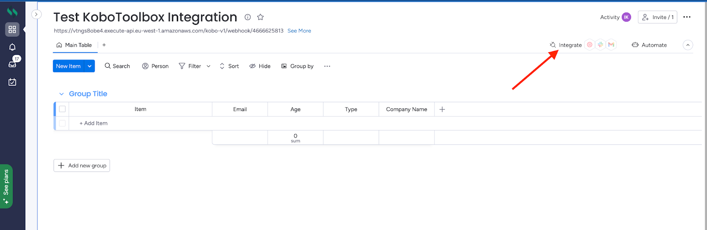
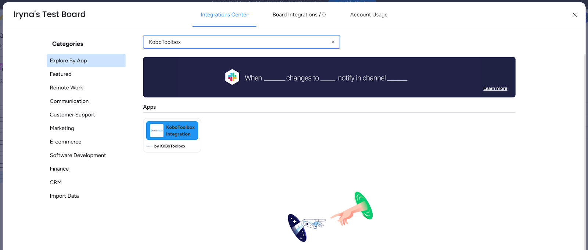
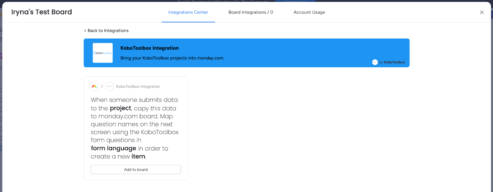
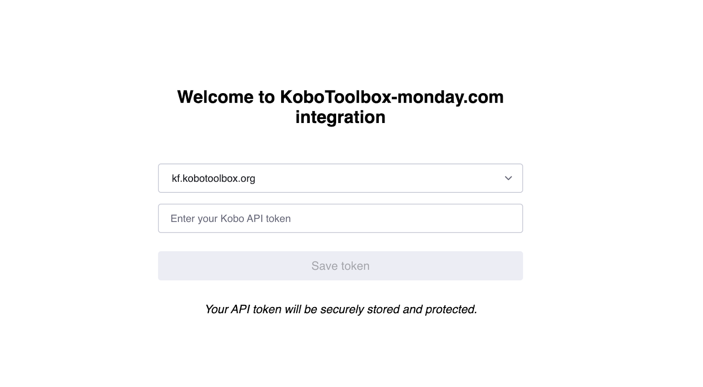
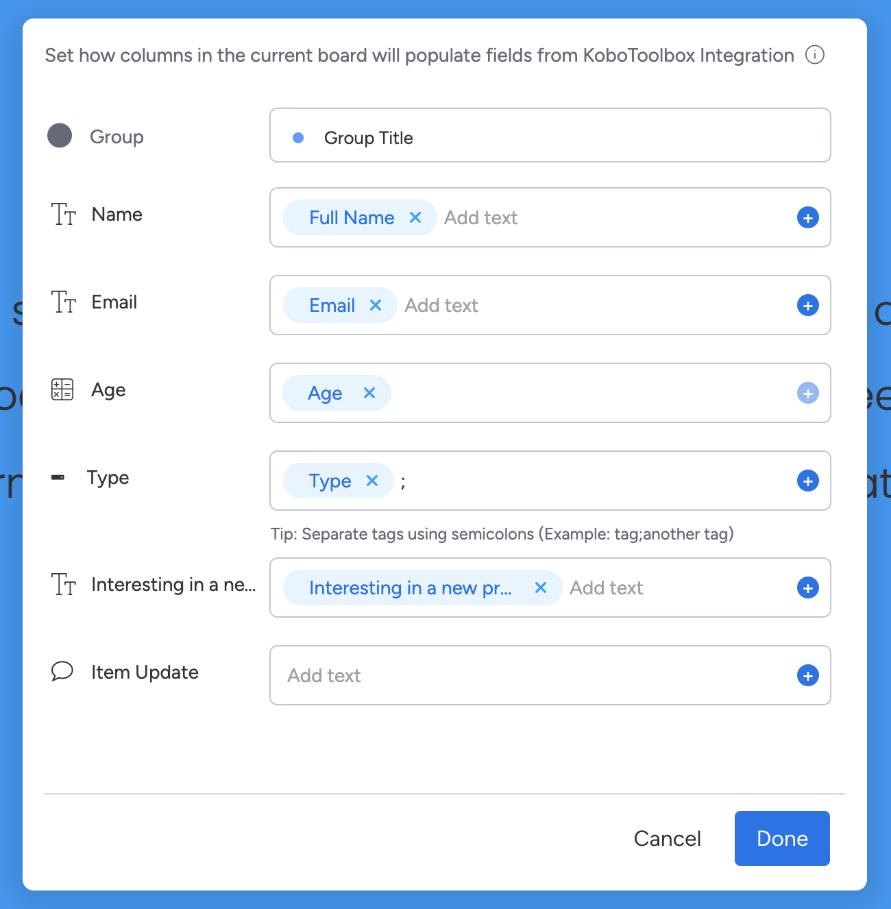
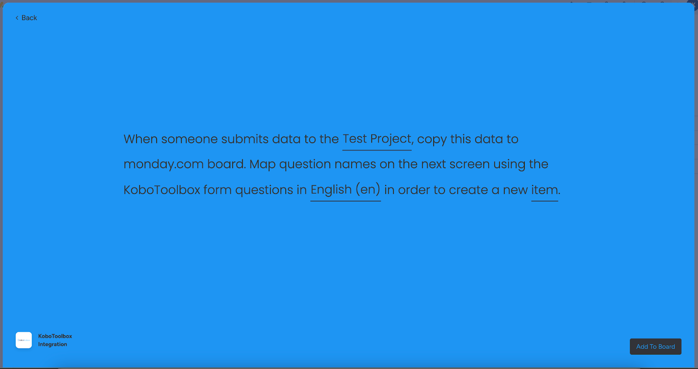
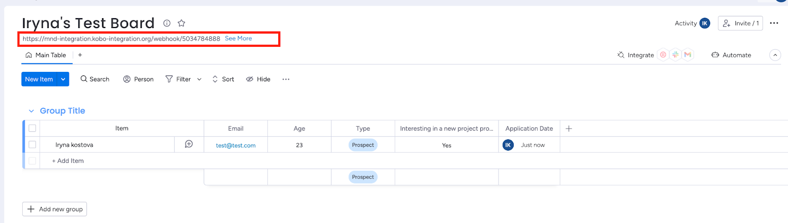
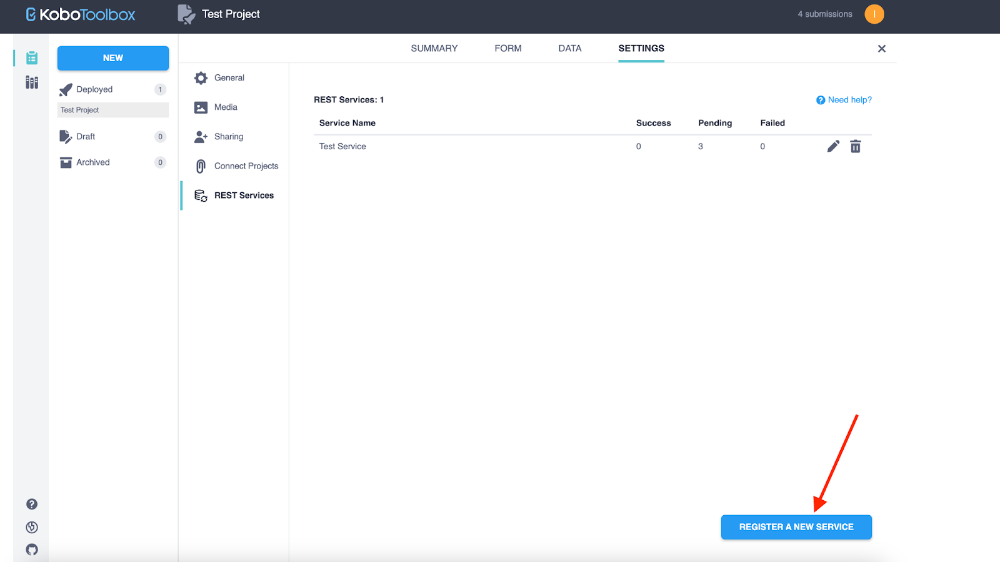
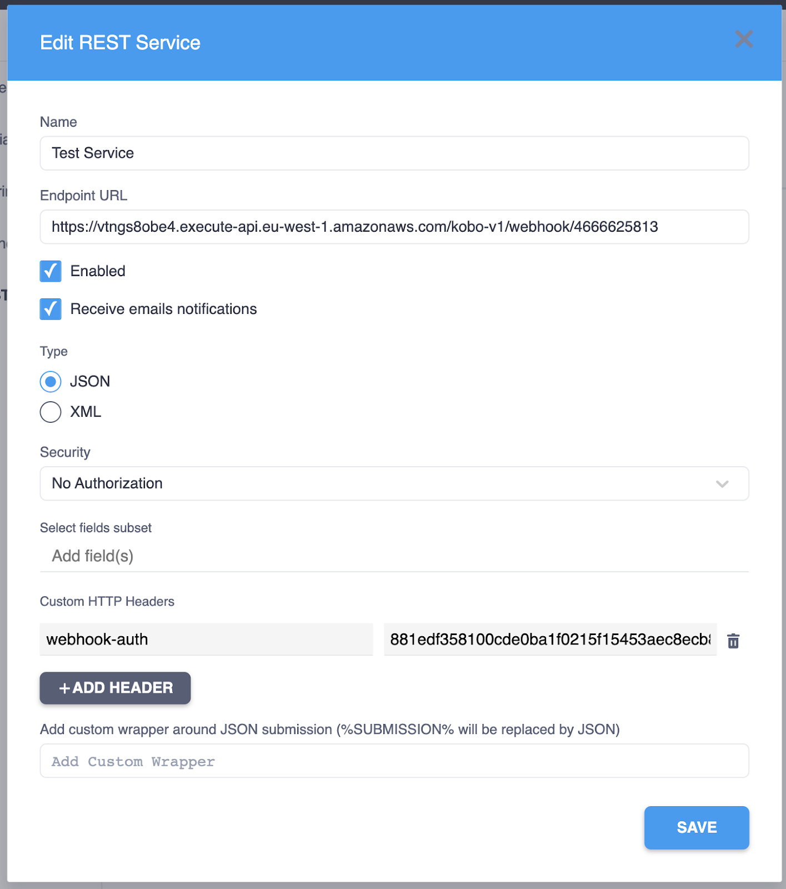
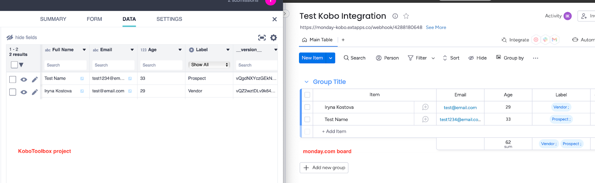

Busca en nuestra documentación, explora nuestros recursos y visita nuestro Foro de la Comunidad para obtener información más detallada
Última actualización: 3 de mayo de 2024
Este artículo describe el lanzamiento anticipado de la integración entre KoboToolbox y Monday.com. Como ocurre con cualquier nuevo lanzamiento, puede haber algunos errores inesperados. Si encuentras algún problema, contáctanos de inmediato para que podamos resolverlo. ⚠️ Recomendamos realizar pruebas rigurosas antes de implementar esta integración en proyectos de importancia crítica. ⚠️
La integración de KoboToolbox permite a los usuarios sincronizar fácilmente los datos de su proyecto desde un proyecto de KoboToolbox a un tablero de monday.com.
En pocos pasos puedes configurar la integración para copiar automáticamente los envíos de datos recibidos en KoboToolbox a cualquiera de tus tableros de monday.com. Esta integración reduce significativamente el trabajo manual de copiar y pegar datos de proyectos de KoboToolbox a monday.com.
Proceso simplificado para conectar proyectos de KoboToolbox con tableros de monday.com.
Mapeo sencillo de campos de monday.com a preguntas de KoboToolbox usando cualquier idioma de etiqueta definido en el formulario.
Sincronización en tiempo real de los nuevos envíos para crear nuevos elementos.
Crea una cuenta en KoboToolbox si aún no tienes una. Obtén más información sobre cómo crear una cuenta.
Prepara un tablero de monday.com que refleje la estructura de tu proyecto de KoboToolbox, de modo que todos los campos de tu proyecto de KoboToolbox estén representados en un tablero de monday.com.
Durante la configuración de la integración, deberás autenticar el acceso a tu cuenta proporcionando tu clave API de KoboToolbox. Aprende cómo obtener tu clave API.
**Nota:** La clave API es un identificador único utilizado para la autenticación. En KoboToolbox, se denomina **clave API**. En monday.com, se denomina **token de API**.
Instala la integración de KoboToolbox desde el marketplace de aplicaciones de monday.com.
Una vez instalada, ve al tablero que preparaste anteriormente para configurar la integración.
**Nota 1:** Solo se puede establecer una receta de integración de KoboToolbox por tablero de monday. **Nota 2:** Solo la persona que instaló la receta puede editarla; todos los demás miembros del tablero solo pueden abrirla en modo de solo lectura.
Ve al menú Integración en la parte superior derecha.

Busca KoboToolbox en el Centro de integraciones.

Haz clic en la integración de KoboToolbox y elige la receta incluida.

Autoriza la aplicación de KoboToolbox:
Ingresa la URL del servidor de KoboToolbox donde creaste tu cuenta. Para el Servidor Global, usa la URL del servidor https://kf.kobotoolbox.org. Para el Servidor con sede en la Unión Europea, usa la URL del servidor https://eu.kobotoolbox.org.
Ingresa tu clave API de KoboToolbox en el campo «Kobo API token».

**Nota:** Para cambiar la clave API después de configurar la receta de integración, la aplicación de integración de KoboToolbox debe reinstalarse por completo.
Para la configuración de la receta, define los siguientes parámetros:
Elige el proyecto de KoboToolbox que deseas conectar a tu tablero de monday.com desde el menú desplegable. Solo los proyectos implementados están disponibles para su selección.
Elige el idioma de las etiquetas desde el menú desplegable. Si tu formulario contiene más de un idioma, selecciona el idioma que se usará para mapear las preguntas a las columnas. El idioma seleccionado solo se mostrará para mapear las preguntas de KoboToolbox con las columnas de monday.com. Los datos que se muestren en el tablero de monday.com siempre usarán la estructura de datos XML subyacente en lugar de las etiquetas traducidas de Seleccionar una o Seleccionar varias.
Haz clic en Item para configurar el mapeo de preguntas a columnas.

Cuando hayas completado la configuración de la receta, haz clic en el botón Add to Board.

Después de completar la configuración de la integración, debes configurar los Servicios REST en KoboToolbox para sincronizar automáticamente los datos de tu proyecto con el tablero de monday.com. Para configurar los Servicios REST en KoboToolbox:
Copia el enlace de integración de la notificación de configuración de la integración o desde la
descripción en tu tablero de monday.com.

Inicia sesión en tu cuenta de KoboToolbox.
Ve al proyecto que deseas conectar. Abre la ventana CONFIGURACIÓN, luego elige Servicios REST
y haz clic en el botón REGISTER A NEW SERVICE.

Ingresa «monday.com integration» como nombre del servicio e ingresa el enlace de integración en el campo «Endpoint URL».
En la sección «Custom HTTP Headers», inserta el valor «webhook-auth» en
el campo «Name» e ingresa tu clave API de KoboToolbox en el campo «Value».

Haz clic en el botón SAVE.
¡Todo listo! Cada nuevo envío a tu proyecto de KoboToolbox se agregará automáticamente a tu tablero de monday.com según la configuración de tu receta.\

Notas importantes
Las actualizaciones realizadas a un formulario o a un envío individual en un proyecto de KoboToolbox que ya se ha agregado a tu tablero de monday.com no se actualizarán automáticamente en tu tablero de monday.com. Cambios como eliminar o renombrar una pregunta, cambiar una jerarquía de grupos, cambiar un grupo a un grupo de repetición, o editar etiquetas en el formulario de KoboToolbox no afectarán los elementos en tu tablero de monday.com.
La ubicación no es compatible automáticamente con el mapeo de campos dinámicos. Para transferir una ubicación o coordenadas de KoboToolbox a una columna de monday.com:
Crea dos columnas en tu tablero de monday.com para que se rellenen con los datos de ubicación: una columna de tipo Texto y una segunda columna de tipo Ubicación. Es importante que tengan el mismo nombre.
En el mapeo de campos dinámicos, mapea la ubicación de KoboToolbox a la columna de tipo Texto de monday.com. La columna de tipo Ubicación no aparecerá en el mapeo dinámico.
El envío de ubicación de KoboToolbox se rellenará automáticamente en la columna de tipo Ubicación de monday.com.
La columna de archivos no es compatible automáticamente con el mapeo de campos dinámicos. Para transferir archivos de KoboToolbox a monday.com:
Agrega una columna de tipo Archivo al tablero de monday.com y dale el mismo nombre que el campo de archivo en tu proyecto de KoboToolbox. El mismo nombre de columna de archivo debe usarse tanto en monday.com como en KoboToolbox.
Si aún no has instalado la receta de integración, completa el proceso de instalación. Una vez completada la instalación, ve al Centro de integraciones, abre la receta existente y haz clic en el botón Update automation para aplicar los últimos cambios funcionales.
No se necesitan otros cambios de configuración. Los archivos se transferirán automáticamente desde el proyecto de KoboToolbox a la columna correspondiente en tu tablero de monday.com según el nombre de la columna.
Para garantizar un alto rendimiento en los tableros de monday.com, monday.com limita el número de columnas por tablero: 200 columnas para cuentas no empresariales y 300 columnas para cuentas empresariales.
¿Qué son los Servicios REST?
Puedes encontrar más información sobre los Servicios REST en este artículo de ayuda.
¿Qué es el mapeo de campos dinámicos?
El mapeo de campos dinámicos es la asociación de los campos representados en el tablero de monday.com con las preguntas correspondientes del proyecto de KoboToolbox.
¿Qué ocurre si cambio mis datos en la cuenta de Kobo?
Las actualizaciones realizadas a un formulario o a un envío individual en tu proyecto de KoboToolbox que ya se ha enviado al tablero de monday.com no se sincronizarán automáticamente.
¿Qué ocurre si cambio mis datos en el tablero de monday.com?
Los cambios realizados en los datos representados en el tablero de monday.com no se reflejarán en el proyecto de KoboToolbox.
¿Qué ocurre si necesito cambiar el idioma más adelante?
La selección de idioma solo afecta la vista de mapeo de campos dinámicos de la configuración de la receta de integración. Los datos del tablero no se traducirán.
¿Qué ocurre si elimino el proyecto en KoboToolbox?
Si se elimina un proyecto en KoboToolbox, la integración dejará de funcionar hasta que la receta de integración se actualice con un nuevo proyecto.
¿Qué son los «tipos de columna»?
Un «tipo de columna» en monday.com equivale a un tipo de pregunta en KoboToolbox.
¿Qué tipos de preguntas de KoboToolbox se pueden transferir a monday.com?
Todos los tipos de preguntas excepto XML externo son compatibles con monday.com. Si no encuentras el tipo de columna adecuado en el tablero de monday.com, usa una columna de tipo Texto.
Para transferir los tipos de preguntas Punto y Área de KoboToolbox a la columna de tipo Ubicación en el tablero de monday.com, usa el método descrito en la Nota importante n.º 2. Si no es imprescindible transferir los datos a la columna de Ubicación, se puede usar una sola columna de tipo Texto sin configuración adicional.
¿Cómo se transfieren a monday.com las preguntas de Seleccionar varias de KoboToolbox?
Para las preguntas de Seleccionar varias, se debe usar una columna de tipo Lista desplegable en el tablero de monday.com para que todas las opciones seleccionadas se transfieran correctamente al tablero.
¿Cómo se transfieren a monday.com las preguntas de Seleccionar una de KoboToolbox?
Para las preguntas de Seleccionar una, usa una columna de tipo Estado (limitada a 40 opciones de etiqueta), Lista desplegable o Texto para que la opción seleccionada se transfiera correctamente al tablero.
¿Puedo sincronizar más de un proyecto de KoboToolbox con mi tablero de monday?
No. Solo se puede establecer una receta de integración de KoboToolbox por tablero. Tener más de una receta generará un error de servidor.
¿Por qué no puedo modificar una receta creada por otro miembro del tablero de monday.com?
Solo el miembro del tablero que creó la receta puede editarla. Todos los demás miembros del tablero solo pueden abrirla en modo de solo lectura.
¿Encontraste lo que buscabas? ¿La información fue clara? ¿Faltaba algo?
¡Comparte tus comentarios para ayudarnos a mejorar este artículo!
KoboToolbox es mantenido por Kobo Inc.